L’objectif de ce module est l’étude des moyens mis en œuvre pour l’acquisition et la transmission des mesures de débits, de pressions et de températures dans les usines d’incinération des déchets ménagers. Le module présente aussi le fonctionnement des vannes de régulation. À la fin de ce module, vous serez capable d’identifier les principaux capteurs ainsi que les transmetteurs et les actionneurs présents sur vos sites.
Principes fondamentaux du fonctionnement des capteurs et des actionneurs
La technologie évolue : en quelques dizaines d’années, on est passé d’une technologie mécanique, hydraulique et pneumatique à une technologie électronique et informatique. Les capteurs ont suivi ce progrès technologique. Toutefois, les principes mis en œuvre jouissent d’une certaine pérennité. Il est donc très important de bien posséder ces principes car ils sont souvent assez simples et leur bonne connaissance permet d’avoir un esprit critique quant aux résultats que ces capteurs donnent, donc de déceler d’éventuels dysfonctionnements.
Quelles que soient les grandeurs physiques le principe général consiste à relever, à l’aide d’un élément simple, les données physiques d’un procédé et de les transformer, grâce à un moyen mécanique, électrique ou autre, en une grandeur utilisable. Les grandeurs physiques les plus couramment rencontrées dans l’incinération et que nous allons étudier dans ce module sont :
La mesure de pression est considérée comme essentielle. Elle peut être utilisée pour mesurer :
Dans un premier temps, nous étudierons les indicateurs de pression appelés manomètres, puis les technologies plus récentes, surtout utilisées dans les transmetteurs.
Cet appareil est constitué essentiellement d’un tube cintré de section aplatie. L’une des extrémités est encastrée et raccordée à l’enceinte, et soumise à la pression que l’on désire mesurer ; l’autre extrémité est libre et fermée. Afin de faciliter son étude, on peut schématiser le tube de Bourdon de la manière ci-contre :
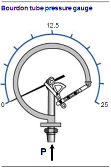
La pression à l’intérieur du tube s’exerce de la même façon sur les quatre côtés du tube : une force F1 vers le haut qui tend à redresser le tube et une force F2 vers le bas qui tend à cintrer le tube. Ces forces sont proportionnelles aux surfaces de chaque côté. Elles sont d’autant plus importantes que les surfaces sont importantes.
Les surfaces latérales du tube étant les mêmes, les forces sont identiques et s’annulent. La surface du côté supérieur du tube étant plus importante que celle du côté inférieur, la force F1 est supérieure à la force F2, et le tube tend à se redresser. Plus la pression dans le tube augmente, plus le tube se redresse.
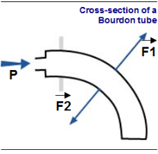
Il existe deux principales variantes du manomètre à tube de Bourdon :
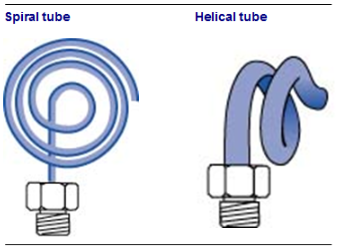
Les manomètres à membraneDans ces manomètres, la membrane transforme la pression en un déplacement linéaire commandant l’affichage. Domaine d’utilisation : de 0,015 à 25 bars. Précision : ± 2\
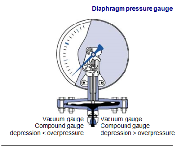
Ces capteurs sont généralement constitués de fils ou de dépôts en couches minces de matériaux dont la résistivité électrique (R en W) varie sous l’effet d’une variation de pression. Les jauges résistives sont des capteurs traduisant en variation de résistance leur propre déformation. En effet, si l’on prend comme exemple une jauge de contrainte collée sur une membrane métallique, nous obtenons les effets suivant :
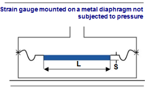
On sait que la résistance d’un fil électrique est exprimée par la formule suivante :
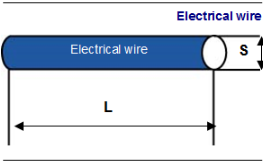
\[ R = L{S} \] où :
Lorsqu’on applique une pression sur la membrane métallique, cette membrane va se déformer. Dans ce cas la jauge de contrainte va subir la même déformation.
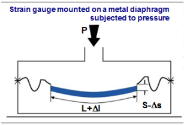
La déformation de la jauge va entraîner une augmentation de sa longueur (L), ainsi qu’une diminution de sa section. Comme L est au numérateur et S au dénominateur, leur rapport va augmenter. Comme r reste constant, la résistance R augmente.
\[ R = L{S} {} R \]
Nous pouvons dire que la résistance d’une jauge de contrainte augmente proportionnellement à la pression mesurée.
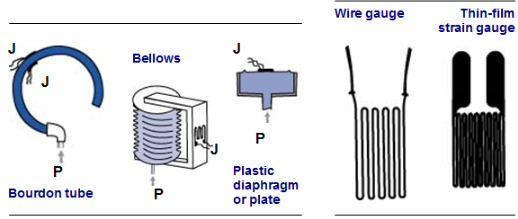
Réalisation pratiqueIl existe différents éléments sensibles sur lesquels on peut monter une jauge de contrainte. Domaine d’utilisation : de 0,015 à 2 500 bars. Précision : ± 1\
On se sert très souvent du transmetteur de pression lorsque l’on doit réaliser l’indication et/ou l’enregistrement d’une pression en un lieu éloigné de l’élément de mesure, et lorsqu’il est impératif d’assurer de hautes performances globales. On utilise aussi bien les transmissions électroniques que pneumatiques.
Les éléments mécaniques utilisés pour convertir les pressions appliquées en déplacements sont les membranes, les soufflets, les tubes de Bourdon et les tubes droits. Mais pour les transmetteurs électroniques, qui représentent la grande majorité du marché, on utilise surtout la technologie des cellules capacitives.
Les transmetteurs délivrent un signal standard électrique 4-20 mA ou pneumatique 0,2-1 bar fonction de la pression mesurée.
Cette technologie est de loin la plus employée dans les transmetteurs électroniques de pression différentielle.
Son principe consiste à avoir un condensateur dont la longueur diélectrique varie en fonction de la différence de pression, ce qui modifie la valeur de sa capacité.
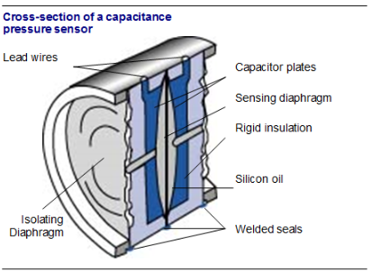
La pression à mesurer est appliquée à une membrane isolante sur un côté de la cellule du capteur. Un liquide de remplissage (huile silicone) transmet la pression appliquée à la membrane au centre de l’élément sensible.
De la même façon, une pression de référence (pression atmosphérique ou autre pression) est transmise à l’autre face de la membrane détectrice.
La déformation de la membrane de détection (environ 1/10 de mm) dépend de la différence de pressions qui l’influencent sur les deux faces. Les plaques du condensateur fixes, disposées de part et d’autre de la membrane détectrice, détectent la position de cette membrane.
La variation différentielle de capacité entre la membrane détectrice et les plaques fixes est convertie électroniquement en un signal standard électrique (4-20 mA).
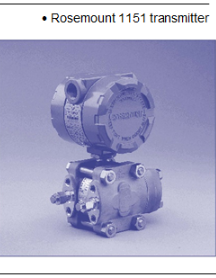
Remarque : Un transmetteur est conçu pour fonctionner dans une gamme de pression. Une utilisation en dehors de la gamme entraîne une destruction du transmetteur.
Dans ce chapitre, nous allons nous intéresser à la thermométrie utilisée dans les unités d’incinération, c’est-à-dire à la thermométrie par résistance et par thermocouple.
Il s’agit de mesurer une température à l’aide d’une sonde dont la résistance varie avec la température.
PrincipeLa résistance des conducteurs électriques, mesurée en ohms ($ $), varie en fonction de la température. Plus la température augmente, plus la résistance augmente. Pour que ce phénomène soit utilisable, il faut que le rapport entre la résistance et la température soit prévisible, régulier et stable. Certains métaux remplissent ces conditions (le cuivre, l’or, le nickel, le platine, l’argent…). Parmi ceux-ci, l’or et l’argent ont des valeurs de résistivité électrique basse, qui les rendent moins aptes à la thermométrie par résistance. Le cuivre présente un rapport résistance/température pratiquement linéaire, mais a aussi une valeur de résistivité électrique basse. Le nickel présente une haute résistivité et un coefficient résistance/température élevé, mais de façon non linéaire.
Le platine réunit des caractéristiques qui le rendent propice à la thermométrie par résistance. Il possède une large échelle de température, un coefficient résistance/température acceptable bien que non linéaire. Bien que ce soit un matériau coûteux, seules de petites quantités entrent dans la fabrication d’un thermomètre à résistance et ceci ne représente donc pas un facteur hautement significatif dans le coût global.
Il existe des sondes au nickel et au cuivre, mais les sondes les plus utilisées sont les sondes au platine.
Quelle que soit la sonde utilisée, la loi qui lie la résistance de la sonde Rt ($ $) à la température t (°C) peut être représentée graphiquement par une courbe. Cependant, dans une faible étendue de mesure, on peut linéariser cette loi, c’est-à-dire la représenter par une droite comme ci dessous :
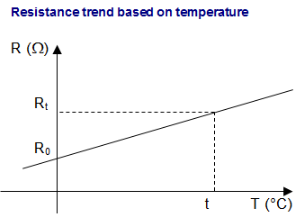
Les sondes platineCaractéristiques
Les sondes les plus utilisées sont des sondes au platine dont la résistance fait 100 ž à 0 °C. Ces sondes sont appelées sondes Pt 100. Pt = symbole du platine. 100 = valeur ohmique de la sonde à 0 °C.
On appelle « sensibilité » de la sonde, la variation de résistance engendrée par une variation de 1 °C.
Il est très important que les connexions de la sonde sur l’appareil de mesure soient très bien assurées ; si ce n’est pas le cas, cela peut engendrer des erreurs de mesure de plusieurs degrés.
Types de sondes et protections
La plupart des utilisateurs de thermomètre à résistance platine utilisent des sondes fabriquées pour un usage bien déterminé. Il existe un grand choix de sondes de types et de styles différents. Les sondes peuvent se présenter sous forme d’enroulements de fil de platine maintenus en place par une couche de ciment ou de vernis, soit dans un cylindre, soit dans un disque. Le fil de platine peut aussi être déposé sur film mince. L’élément peut ensuite être collé sur une surface plane ou cylindrique.
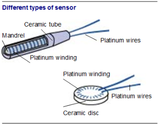
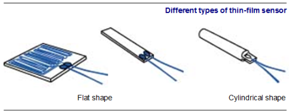
Les sondes à résistance sont généralement placées dans des gaines de protection. Celles-ci peuvent être équipées de borniers de raccordement, comme les thermocouples, ou la gaine de protection peut être placée dans un « doigt de gant » pour assurer une meilleure protection contre l’environnement ou les contraintes métalliques.
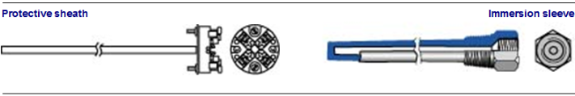
Domaine d’utilisation
Les sondes Pt 100 peuvent être utilisées pour mesurer des températures allant de – 200 °C à + 850 °C.
Autres sondes platine
Il existe d’autres sondes qui ont d’autres domaines d’utilisation, par exemple les sondes Pt 200 et Pt 500.
Les sondes nickelCaractéristiques
Les sondes au nickel (Ni) ont une meilleure sensibilité entre 0 °C et 100 °C, mais leur domaine d’utilisation est plus limité et elles ont une mauvaise linéarité.
Domaine d’utilisation
Les sondes nickel peuvent être utilisées pour mesurer des températures allant de – 195 °C à + 260 °C.
Différentes sondes nickel
Il existe des sondes Ni 100, Ni 200 et Ni 500.
Les sondes cuivreCaractéristiques
Les sondes au cuivre ont une très bonne linéarité, mais un domaine d’utilisation limité et leur faible résistivité impose un encombrement important.
Domaine d’utilisation
Les sondes cuivre peuvent être utilisées pour mesurer des températures allant de – 200 °C à + 180 °C.
Différentes sondes cuivre
Il existe des sondes Cu 100, Cu 200, Cu 400 et Cu 500.
Méthodes de mesureLa plupart des instruments permettant de déterminer la résistance des sondes utilisent un procédé de mesure de résistance électrique appelé « pont de Wheatstone ». Comme le montre le schéma suivant, un pont de Wheatstone est un circuit constitué de quatre résistances, d’une source d’alimentation et d’un galvanomètre. On rappelle qu’un galvanomètre est un ampèremètre très précis qui mesure des courants électriques de l’ordre du milli-ampère (0,001 ampère).
Avec R1 et R2 qui sont deux résistances fixes, Rv est une résistance variable et Rt qui est la sonde à résistance dont on veut déterminer la valeur.
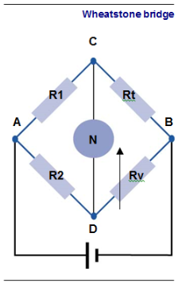
On constate que lorsque le courant qui le traverse est nul, on a le produit de la résistance (R1) montée entre A et C multipliée par la résistance (Rv) montée entre D et B qui est égal au produit de la résistance (R2) montée entre A et D, multipliée par la résistance (Rt) montée entre C et B. Soit dans notre cas :
\[ R2 Rt = R1 Rv \]
Cela donne :
\[ Rt = R1{R2} Rv \]
L’inconvénient du pont de Wheatstone est que, pour annuler le courant qui traverse le galvanomètre, il faut modifier manuellement la valeur de la résistance variable Rv. Pour que cette mesure se fasse automatiquement, on remplace la résistance variable Rv par une résistance fixe R3. Le pont est alors à valeur fixe, il n’est pas balancé par des valeurs de résistance opposées, mais c’est l’amplitude de la tension hors balance Vs dans le pont qui est utilisée pour déterminer la valeur de la résistance.
Le problème de ce montage simple est qu’en fait la sonde Rt n’est pas située dans le pont, mais à une distance de l’appareil de mesure qui peut être importante, comme le montre le schéma ci-contre.
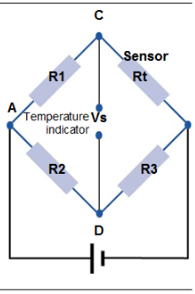
Les résistances de ligne dues à la résistivité du câble de raccordement faussent les mesures car elles s’ajoutent à la résistance de la sonde.
Dès que la distance séparant la sonde de l’appareil de mesure est importante, on utilise un montage trois fils. Dans ce cas, les deux fils de la sonde sont disposés de part et d’autre du pont et leurs résistances s’annulent.
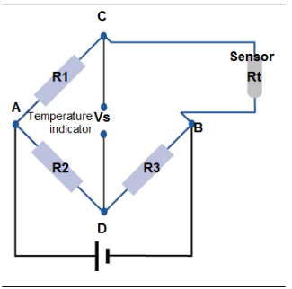
Pour conserver une bonne précision il est indispensable de contrôler la sonde et éventuellement de la remplacer périodiquement.
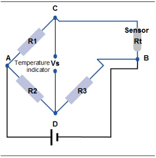
Il s’agit de mesurer une température à l’aide d’un élément qui génère une tension.
Principe physiqueLes thermocouples utilisent l’effet Peltier. Un thermocouple est constitué de deux métaux de natures différentes soudés à chaque extrémité. Si les deux extrémités sont à des températures différentes, il y a naissance dans les conducteurs d’une tension appelée force électromotrice (FEM) de quelques millivolts.
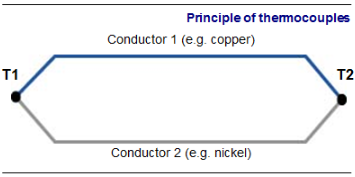
Remarque
Si les deux conducteurs sont de même nature ou si les tensions sont égales, T1 = T2, il n’y a pas création de FEM.
Conclusion
La FEM dépend de la nature des métaux composant le couple et de la différence de température des deux soudures. Souvent, les thermocouples sont placés dans une gaine en matériau métallique ou réfractaire.
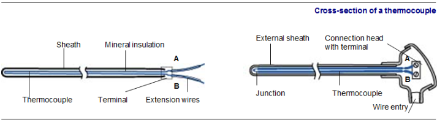
Méthode de mesureÉtant donné qu’un thermocouple est un générateur électrique, on peut mesurer la FEM qu’il génère avec un voltmètre. Mais on préfère utiliser le montage suivant :
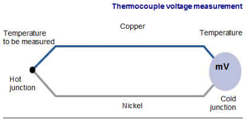
Remarque
Par convention, on appelle la température à mesurer, « température de soudure chaude » ; la température connue, « température de soudure froide », même si celle-ci est supérieure à la température de soudure chaude.
Différents thermocouplesOn utilise principalement quatre thermocouples, constitués des métaux suivants : Nickel-chrome – Nickel allié Cuivre – Constantan Fer – Constantan Platine-rhodium 10\
Remarque
Les thermocouples sont polarisés comme les piles électriques. Par convention, le premier métal cité pour un thermocouple est de polarité positive.
Tableau des symboles et domaines d’utilisation des différents thermocouples
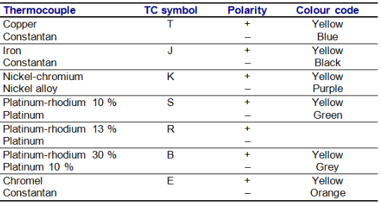
Loi liant la FEM à la températureSuivant les thermocouples utilisés, il a été établi des tableaux donnant la FEM en fonction de la température (voir tableaux).
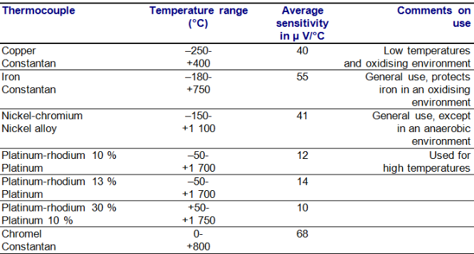
Tableau des caractéristiques des différents thermocouples
La courbe représentative n'est pas une droite et elle est différente pour chaque thermocouple.
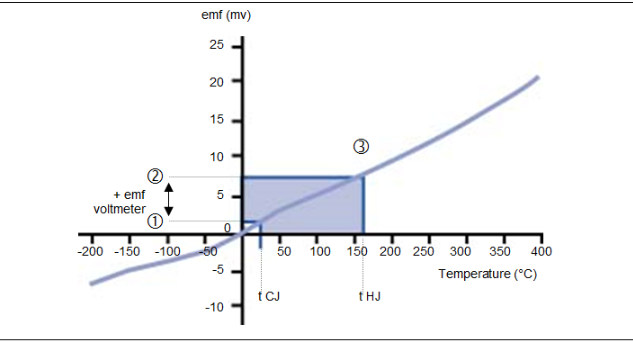
Pour déterminer la température de soudure chaude, la procédure suivante, qui se réfère au graphique ci-dessus , doit être suivi :
Les câbles d’extension permettent de prolonger les circuits de thermocouple jusqu’à la mesure. Ils se présentent sous forme de câbles électriques dont les conducteurs sont réalisés dans les mêmes matériaux que ceux de la sonde. Ils peuvent également être réalisés en matériaux complètement différents, mais de mêmes caractéristiques thermoélectriques dans une plage réduite de température. Ils sont alors appelés câbles de compensations. Lorsque le point de connexion à la sonde se situe à une température élevée (> 80 °C), on évitera des erreurs de mesure en préférant un câble d’extension à un câble de compensation. Les câbles d’extension et de compensation permettent de déplacer la soudure froide.
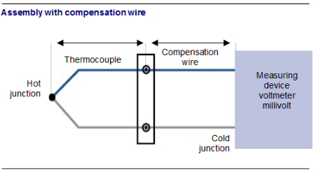
Tableau des différents fils de compensation
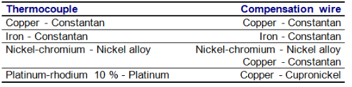
À chaque thermocouple correspond un câble de compensation.
Tableau des symboles et couleurs des fils de compensation
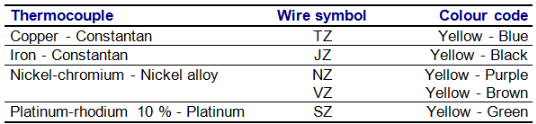
Câble de liaisonLes câbles de liaison sont de simples câbles de cuivre. Ils permettent d’éloigner l’appareil de mesure du thermocouple mais sans déplacer la soudure froide.
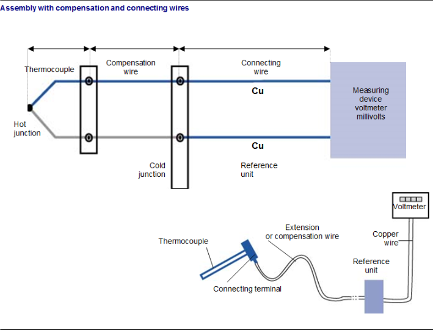
La mesure du débit de liquide est un des aspects les plus importants de la régulation de procédé chimiques, tels que les traitements humides des gaz de combustion et les chaînes de déminéralisation de l’eau. Elle constitue peut-être la variable du procédé la plus souvent mesurée.
Ce chapitre présente les appareils couramment utilisés pour mesurer le débit dans les unités d’incinération d’ordures ménagères. Le débit est habituellement calculé par déduction, en mesurant la vitesse à travers une section connue. Le débit mesuré par cette méthode indirecte est le débit volumique (qv), défini dans les termes les plus simples sous la forme :
\[ q_{v} = S v \]
où :
Dans cette relation, S est la section de la conduite et v la vitesse du fluide. Généralement, on mesure la vitesse (v) du fluide, la section S étant maintenue constante. Il est aussi possible de mesurer la section en maintenant la vitesse du fluide constante, ou encore de mesurer directement le débit à l’aide d’un compteur volumétrique. Une indication fiable du débit dépend donc de la mesure correcte de la section S et de la vitesse (v).
Une indication fiable du débit dépend donc de la mesure correcte de S et de v. Si, par exemple, des bulles d’air sont présentes dans le fluide, le terme S de l’équation relative à la surface sera artificiellement élevé. De même, si la vitesse est mesurée sous forme de vitesse ponctuelle au centre de la conduite et utilisée comme terme v de l’équation relative à la vitesse, le qv calculé sera supérieur à sa valeur réelle, car v doit refléter la vitesse moyenne de l’écoulement lorsqu’il traverse une section transversale de la conduite.
De plus, la masse volumique ($ $, se prononce « RHO ») d’un fluide influe sur le débit, car un fluide plus dense exige une charge supérieure pour maintenir le débit désiré. Le fait que les gaz soient compressibles, alors que les liquides ne le sont pas, exige en outre souvent l’utilisation de méthodes différentes pour mesurer des débits de liquides, de gaz ou de liquides contenant des gaz.
Les débitmètres manométriques sont les types de débitmètres les plus fréquemment utilisés pour la mesure des débits de fluide. Ils mesurent le débit de fluide indirectement en engendrant et en mesurant une pression différentielle, en opposant un obstacle à l’écoulement du fluide. La mesure de la pression différentielle peut être convertie en débit volumique, à l’aide de coefficients de conversion connus, dépendant du type de débitmètre manométrique utilisé et du diamètre de la conduite.
À partir de l’équation de continuité, et en supposant une masse volumique constante (fluide incompressible), on constate que, sur deux sections voisines (1 : élément primaire ; 2 : élément secondaire) :
\[ q_{v} = S_{1} v_{1} = S_{2} v_{2} \]
Cette équation constitue l’une des relations les plus importantes de la mécanique des fluides. Elle démontre qu’avec un écoulement régulier et uniforme, une réduction du diamètre de la conduite entraîne une augmentation de la vitesse du fluide.
Les débitmètres manométriques sont en général simples et fiables et leur souplesse d’emploi est supérieure à celle des autres méthodes de mesure du débit. Le débitmètre manométrique comprend presque toujours deux éléments : l’élément primaire (1) et l’élément secondaire (2). L’élément primaire est placé dans la canalisation pour limiter l’écoulement et engendrer une pression différentielle. L’élément secondaire mesure la pression différentielle et délivre un affichage ou un signal transmis à un système de commande.
Les débitmètres manométriques n’exigent aucun étalonnage de l’élément primaire de mesure. L’élément primaire peut être choisi en fonction de sa compatibilité avec le fluide ou l’utilisation spécifique et l’élément secondaire en fonction du type d’affichage ou de transmission des signaux désirés.
Les organes déprimogènesLes éléments primaires, souvent appelés organes déprimogènes, les plus courants sont les diaphragmes, les tubes de venturi et les tuyères.
Les diaphragmes
Un diaphragme concentrique constitue le plus simple et le moins coûteux des débitmètres manométriques. Faisant fonction d’élément primaire, le diaphragme comprime l’écoulement du fluide, ce qui engendre une pression différentielle de part et d’autre du diaphragme. Il en résulte une haute pression en amont et une basse pression en aval, proportionnelle au carré de la vitesse d’écoulement.
Un diaphragme engendre habituellement une perte de charge supérieure à celle des autres éléments primaires. Ce dispositif a pour avantage pratique de ne pas entraîner une augmentation importante du prix en fonction du diamètre de la conduite.
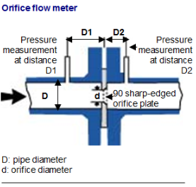
Tubes VenturiLes tubes de Venturi engendrent une perte de charge très réduite par rapport aux autres débitmètres manométriques à pression différentielle, mais ils sont également les plus gros et les plus coûteux. Ils fonctionnent en réduisant progressivement le diamètre de la conduite et en mesurant la perte de pression statique. Une section évasée du débitmètre rétablit ensuite à peu près la pression d’origine de l’écoulement. Comme avec le diaphragme, les mesures de pression différentielle sont converties en un débit correspondant. Les applications du tube de Venturi se limitent en général à celles exigeant une perte de charge réduite. On les utilise beaucoup sur les conduites de grand diamètre, tels ceux utilisés dans les usines de traitement des eaux usées, car leur forme à pente progressive permet aux particules en suspension de les traverser. On les rencontre aussi sur les gaines d’air primaire et ils permettent la mesure du débit d’air injecté sous les grilles.
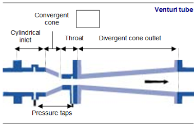
Les tuyèresLes tuyères peuvent être considérées comme une variante du tube de Venturi. L’orifice de la tuyère constitue un étranglement de l’écoulement, mais sans section de sortie rétablissant la pression d’origine. Les prises de pression sont situées à une distance d’environ 1/2 fois le diamètre de la conduite en aval et à une distance d’un diamètre, de la conduite en amont.
La tuyère constitue un débitmètre à haute vitesse utilisé lorsque les turbulences sont importantes, par exemple dans les écoulements de vapeur à haute température. La perte de charge d’une tuyère se situe entre celle d’un tube de Venturi et celle d’un diaphragme (30 à 95\
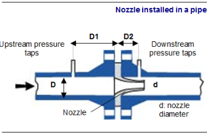
L’organe secondaireL’organe secondaire mesure la différence de pression aux bornes de l’organe primaire. Cette fonction est assurée par un transmetteur de pression différentielle. Ces appareils ont déjà été étudiés dans le chapitre traitant des mesures de pression.
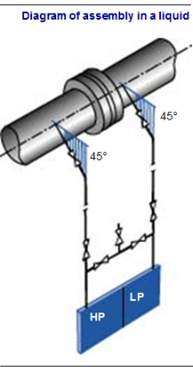
Ce transmetteur est monté différemment suivant l’état du fluide mesuré.
Dans tous les cas il est très important que la tuyauterie des piquages de pression ne gèle pas. En cas de prévention contre le gel il faut calorifuger la tuyauterie ou utiliser si nécessaire un traçage électrique ou à la vapeur.
Remarque : Pour les trois montages suivants, HP et BP signifient chambres haute pression et basse pression des transmetteurs de pression différentielle. Montage sur un liquideLe but de ce montage est d’éliminer toute trace de gaz. Pour cela, il faut monter le transmetteur en point bas.
Montage sur un gazLe but de ce montage est d’éliminer toute trace de liquide. Pour cela, il faut monter le transmetteur en un point haut.
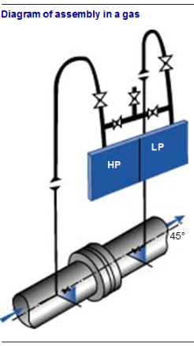
Montage sur de la vapeurLe but de ce montage est d’avoir la même hauteur de condensat sur les deux entrées du transmetteur. Pour cela, on utilise des pots de condensation et le transmetteur est monté en un point bas.
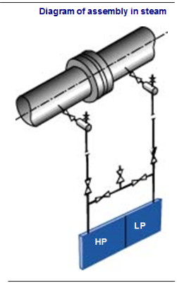
Les débitmètres à section variable (également appelés rotamètres) sont habituellement constitués d’un tube en verre conique, disposé verticalement dans l’écoulement du fluide. Un flotteur de même diamètre intérieur que la base du tube en verre s’élève en fonction de l’ampleur du débit.
Le diamètre du tube en verre étant plus important en haut qu’en bas, le flotteur reste en suspension au point où la différence de pression entre les surfaces supérieure et inférieure en équilibre le poids. Dans la plupart des utilisations des rotamètres, le débit est affiché directement sur une échelle graduée, sur le verre. Dans certains cas, un système de détection automatique mesure le niveau du flotteur et transmet un signal de débit.
Ces rotamètres transmetteurs sont souvent réalisés en acier inoxydable ou autres matériaux permettant de les utiliser avec différents fluides ou à des pressions plus élevées. Le diamètre des rotamètres peut aller de 6 mm à plus de 15 cm. Ils mesurent une gamme de débits plus importante (1 à 10) qu’un diaphragme, avec une incertitude de ± 2\
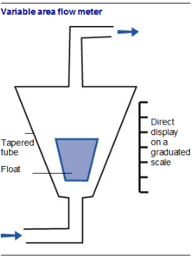
Le principe de fonctionnement du débitmètre électromagnétique repose sur la loi d’induction électromagnétique de Faraday, selon laquelle une tension sera induite dans un conducteur traversant un champ magnétique.
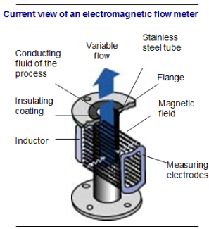
L’ampleur de la tension induite E est directement proportionnelle à la vitesse du conducteur v, à la largeur du conducteur D et à l’intensité du champ magnétique B. La figure suivante illustre le rapport entre les composants physiques du débitmètre magnétique et la loi de Faraday. Les bobines d’induction disposées de part et d’autre de la conduite engendrent un champ magnétique. Lorsque le liquide conducteur du procédé traverse le champ à une vitesse moyenne v, des électrodes détectent la tension induite. La largeur du conducteur est constituée par la distance entre les électrodes. Un revêtement isolant évite tout court-circuit du signal à la paroi du tube. La seule variable de cette application de la loi de Faraday est la vitesse du liquide conducteur v, car l’intensité de champ est maintenue constante et l’écartement des électrodes est fixe. La tension de sortie E est donc directement proportionnelle à la vitesse du liquide, permettant au débitmètre magnétique de délivrer une sortie linéaire.
Le principe de fonctionnement d’un débitmètre à effet vortex est basé sur le phénomène de génération de tourbillons, appelé effet de Karman. Lorsqu’un fluide rencontre un corps non profilé, il se divise et engendre de petits tourbillons ou vortex alternés, de part et d’autre et en aval du corps non profilé, comme un drapeau qui claque au vent à cause des tourbillons engendrés par le vent. Ces tourbillons engendrent des zones de pressions variables détectées par un capteur. La fréquence de génération des tourbillons est directement proportionnelle à la vitesse du fluide.
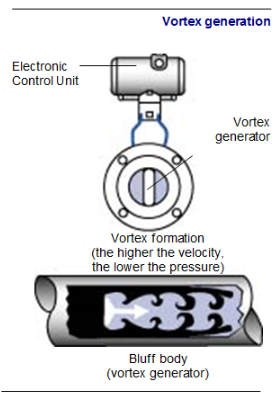
Ces appareils sont basés sur le principe d’un calcul du temps de parcours d’une onde sonore qui passe à travers le flux de liquide entre deux points de la canalisation, un émetteur et un récepteur. Cela donne donc une vitesse du flux de liquide.
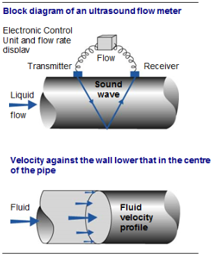
Connaissant cette vitesse et la section de la canalisation au niveau de l’émetteur et du récepteur, on en déduit le débit.
Débit = Vitesse x Section
Cette technique prend en compte les différences de vitesse du fluide sur une section. Le fluide a toujours une vitesse supérieure au centre de la canalisation par rapport la vitesse en périphérie, car les parois de la canalisation ralentissent par frottement le fluide.
Le contrôle du taux d’oxygène dans les gaz de combustion est très important. Il permet de déterminer si la combustion des déchets dans le four est complète ou incomplète. Le principe le plus employé actuellement est le principe physico-chimique. Le dispositif de mesure est constitué par deux électrodes et un électrolyte en contact avec l’échantillon contenant l’oxygène. Un électrolyte est un corps qui, fondu ou en solution, peut se décomposer sous l’action d’un courant électrique. L’électrolyte peut être un liquide ou un solide. Les détecteurs à électrolyte solide les plus répandus sont les analyseurs au zirconium (ZrO2).
Certaines céramiques réfractaires à base d’oxydes métalliques, tels l’oxyde de zirconium (ZrO2), présentent à haute température une certaine mobilité des ions oxygène. On compare donc le gaz de référence au gaz à analyser en mesurant une force électromotrice. Si l’on dispose une pastille d’alliage contenant de l’oxyde de zirconium dont chaque face est revêtue d’une couche poreuse de platine servant d’électrodes, on peut mesurer une différence de potentiel correspondant à la loi de Nernst.
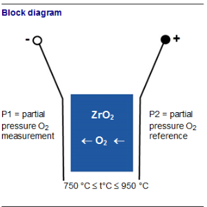
Le choix judicieux de la composition du gaz de référence permet de couvrir une étendue de mesure allant de 0,1 ppm vol. jusqu’à 100\
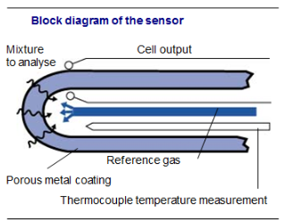
La sonde comporte une électrode double. Le mélange à analyser circule à l’extérieur et le gaz de référence à l’intérieur.
Remarque : Cette loi n’est pas linéaire et la FEM fournie est très faible.
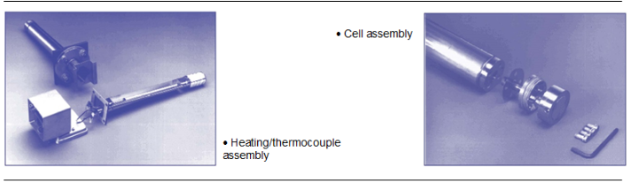
Les vannes de régulation sont les organes de réglage les plus utilisés. Elles sont commandées par le régulateur via un convertisseur, et permettent de modifier la valeur de la grandeur réglante. Elles constituent l’un des éléments principaux d’une boucle de régulation : du choix correct d’une vanne dépend la qualité du résultat obtenue en régulation.
Une vanne de régulation peut se décomposer en trois grandes parties :
Le servomoteur est la partie motrice de la vanne. En effet, c’est le servomoteur qui converti le signal de commande de la boucle de régulation en un déplacement qui permettra d’ouvrir ou de fermer la vanne de régulation.
Remarque :
Dans la majorité des cas, le servomoteur est pneumatique, mais il existe des servomoteurs électriques ou hydrauliques.
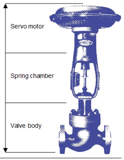
L’arcadeL’arcade est la partie chargée de protéger la tige permettant l’ouverture et la fermeture de la vanne. Elle a aussi pour fonction de réaliser l’étanchéité de la vanne entre le fluide circulant dans le corps de vanne et le milieu extérieur.
Corps de vanneC’est dans cette partie que circule le fluide servant de grandeur réglante à la régulation. Le corps de vanne a aussi pour fonction de transformer le déplacement ordonné par le servomoteur en un débit.
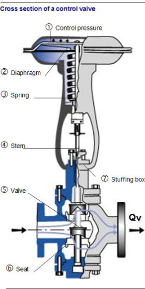
La pression de commande de la vanne 1 est appliqué au diaphragme du servomoteur 2. Le diaphragme convertit cette pression en une force qui est appliquée au ressort du servomoteur 3. Le ressort transforme la force en un déplacement de la tige 4. Le déplacement de la tige modifiera la position 5 de la vanne par rapport au siège 6, augmentant ou diminuant le débit de fluide circulant dans le corps de la vanne. Le presse-étoupe 7 assure l'étanchéité entre le fluide circulant dans le corps de vanne et le milieu extérieur.
On peut résumer le fonctionnement général d’une vanne par le schéma bloc suivant :
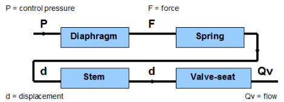
En observant ce schéma de principe, on peut remarquer qu’une vanne de régulation n’est pas asservie : aucun appareil ne contrôle si la position de la vanne correspond à la position demandée par le régulateur. Afin de remédier à ce problème, on peut ajouter sur la vanne de régulation un appareil qui permet de contrôler la position de la vanne par rapport au signal de commande du régulateur. Cet appareil est un positionneur.
Le positionneur va mesurer le déplacement de la tige de la vanne, ce qui va engendrer une correction de la pression de la commande de la vanne. Cette mesure de déplacement va être transformée en une pression, qui est l’image réelle de la position de la vanne. La pression de sortie du positionneur va corriger, si nécessaire, la valeur de la pression de commande entrant dans la vanne, ceci afin de modifier la position de la tige si celle-ci est mal positionnée.
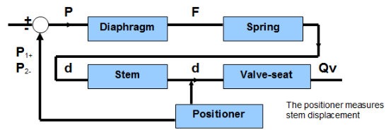
Le rôle du presse-étoupe est d’assurer l’étanchéité de la vanne tout en permettant le déplacement de la tige. Le presse-étoupe est réalisé à l’aide de tresses graphitées, d’anneaux de graphite ou d’anneau de Téflon ou bien d’un garnissage spécifique. Il est très important de vérifier régulièrement l’étanchéité du presse-étoupe.
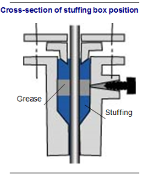
{ Sens direct}
Une vanne de régulation est dit en sens direct lorsque la vanne se ferme quand le signal de commande de la vanne augmente.
On dit aussi que la vanne est normalement ouverte (NO) ou ouverte par manque d’air (OPMA).
Sens inverseUne vanne de régulation est dit en sens inverse lorsque la vanne s’ouvre quand le signal de commande de la vanne augmente.
On dit aussi que la vanne est normalement fermée (NF) ou fermée par manque d’air (FPMA).
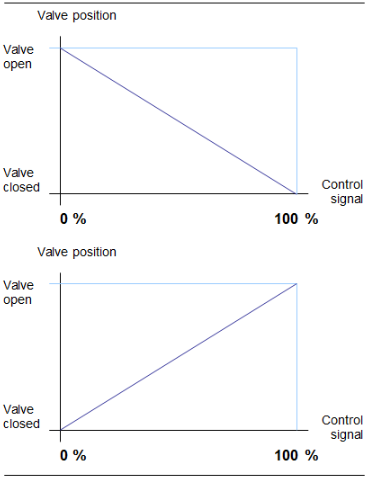